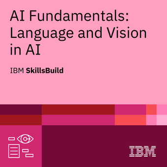

Programming
- Python
- Go
- Object-oriented programming
- Modular application development
- Problem-solving and algorithms
Hello, I'm John Ikwuobe
AI-Native Full-Stack Developer · Software Engineer
I build practical software solutions using modern technologies, artificial intelligence, and engineering problem-solving.
My name is John Obiabo Ikwuobe, a Mechanical Engineer with over 15 years of professional experience in engineering operations, customer support, project coordination, and industrial operations.
I am currently transitioning into software engineering, with a focus on AI-native full-stack development, backend engineering, and practical software solutions.
My engineering background has strengthened my approach to problem-solving, systems thinking, troubleshooting, process improvement, and technical analysis.
I am particularly interested in building software that solves real-world problems while combining software engineering with artificial intelligence.
A selection of practical software projects I have built while developing my skills in full-stack development, backend engineering, and AI-native software development.
Live · AI-assisted
A deployed full-stack, AI-assisted inventory management application built with Python and FastAPI for product management, stock tracking, reporting, analytics, and secure programmatic access.
Features product and supplier management, stock-in/out processing, low-stock monitoring, date-filtered movement history, CSV exports, inventory valuation, category and supplier analytics, interactive Chart.js dashboard visualizations, REST API filtering, sorting and pagination, plus application/database health monitoring.
Integrates the OpenAI API to turn structured, deterministic inventory facts into natural-language analysis and recommendations while Python remains authoritative for quantities, valuations, low-stock status, and rule-based recommendations. AI and reporting endpoints are protected with bearer-token authentication, while the browser interface uses administrator authentication, password hashing, secure sessions and CSRF protection.
Deployed on Render with PostgreSQL hosted on Aiven, SQLAlchemy ORM and Alembic migrations. The project is covered by an automated Pytest/HTTPX suite with 229 tests passing, including mocked AI integration tests that avoid paid API requests during automated testing.
Completed · Team Project · Python CLI
A Python-based campus helpdesk management system developed collaboratively by three engineers during the Learn2Earn Python Engineering Sprint. It supports validated ticket creation, automatic priority calculation, staff assignment, and ticket lifecycle management from open to in-progress and resolved, including reopening.
SLA Monitoring and Escalation: Calculates priority-based deadlines using timezone-aware UTC timestamps, identifies overdue unresolved tickets, and applies idempotent escalation so repeated checks do not duplicate escalation events within the same SLA cycle. Priority and SLA attention queues help surface urgent work.
Audit Logging and Duplicate Detection: Records CREATE, ASSIGN, START, RESOLVE, REOPEN, and ESCALATE events. Detects potentially duplicate unresolved tickets through normalized titles and categories, allowing users to decide whether to continue.
Versioned JSON Persistence and Data Integrity: Uses schema version 2 to store tickets and audit events, validates persisted data and timestamps, and uses atomic file replacement to reduce partial-write risks.
Engineering Knowledge Lab: Provides an interactive ten-question assessment on SLAs, priority, audit logging, duplicate detection, timestamps, escalation, and persistence, with explanations, scores, percentages, and saved quiz sessions. Reporting includes ticket summaries and SLA-related analytics.
My Contributions: Implemented ticket creation, input validation, automatic priority calculation, unique ticket ID generation, JSON persistence, and automated tests, with integration and documentation support. The team collaborated through GitHub feature branches, pull requests, and reviews. The README documents 147 passing tests at its verified integration checkpoint.
Python · Resource tracking
A Python command-line application for managing shared learning resources, including resource inventory, borrowing, returns, inventory search, and category filtering.
Validates resource IDs, fellow IDs, quantities, and available stock; prevents over-borrowing and invalid returns; tracks outstanding loans; and generates reports on available, borrowed, and low-stock resources. Uses JSON for local data storage.
A web application built with Go that converts user-entered text into ASCII art and displays the generated result through a web interface.
The project demonstrates HTTP handling, form processing, templates, input validation, and server-side application logic.
A command-line text-processing application built with Go that processes text files and applies different transformations to the content.
The project demonstrates file processing, string manipulation, text transformation, command-line input, and structured Go programming.
Professional certification and engineering membership reflecting my experience and continued development in software engineering and artificial intelligence.

IBM
IBM credential covering fundamental concepts in artificial intelligence, including language technologies, computer vision, and practical applications of AI.
Professional Membership
Professional membership in the Nigerian Society of Engineers, reflecting my engineering background and professional affiliation.
Globacom Nigeria Limited
Worked across business development, customer engagement, project coordination, stakeholder management, and operational activities.
Developed practical experience in understanding customer requirements, solving business problems, coordinating activities, and maintaining professional relationships.
Engineering & Industrial Operations
Built extensive experience in engineering operations, equipment maintenance, technical reporting, troubleshooting, project coordination, and process improvement.
This engineering background continues to influence my approach to software development through structured problem-solving and systems thinking.
Learn2Earn Otukpo Campus
Currently developing practical skills in Python, Go, web development, backend engineering, databases, software testing, Git, and AI-assisted development.
Building real-world projects to strengthen software engineering and full-stack development capabilities.
Interested in discussing a project, collaboration, software development, or technology? Feel free to get in touch.
I am open to opportunities involving software development, full-stack engineering, backend development, AI-native applications, and technology projects.
successjohnny@gmail.com GitHub